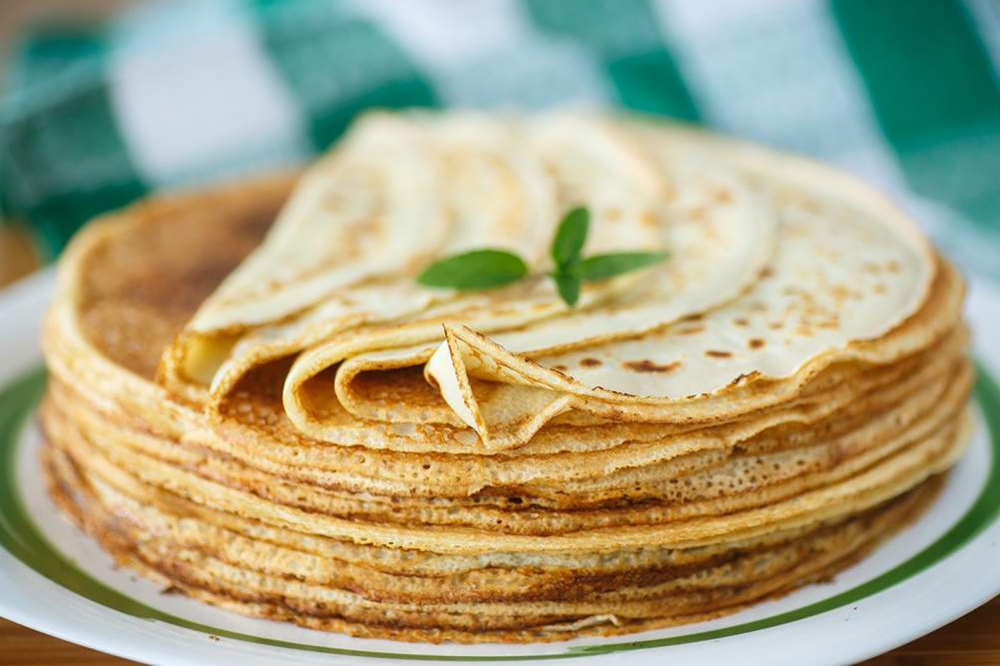

-20dkg liszt
-3dl tej
-2db tojás
-2dl szénsavas ásványvíz
-1csip só
-0,75 olaj+a sütéshez
1.) A palacsintatészta elkészítéséhez keverőtálba töltjük a tejet. Hozzáadjuk a tojást, az olajat, a csipet sót, és alaposan összekeverjük. Használhatunk hozzá robotgépet is.
2.) Hozzámérjük a lisztet, és sűrű, krémszerű tésztát keverünk belőle. Végül hozzáadjuk a szódát, vagy a szénsavas ásványvizet is.
3.) Nagyon fontos, hogy csomómentesre keverjük a palacsintatésztát. Sütés előtt pihentessük legalább 10-15 percet.
4.) Az első palacsinta sütése előtt a forró serpenyőbe egy kevés olajat öntünk (a következő palacsintáknál erre már nincs szükség, maximálisan elegendő, ami kisül a tésztából), és kisebb merőkanálnyi adagot öntünk rá a tésztából. Hagyjuk, elterülni a serpenyőben.
5.) A palacsintákat egyenként kisütjük mindkét oldalukon.
6.) Ízlés szerinti töltelékkel töltjük és feltekerjük, vagy hajtogatjuk. Megszórhatjuk porcukorral is, de nagyon jól illik hozzá a csokoládészósz és a vaníliasodó is.
